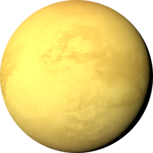
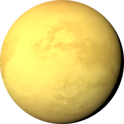

Hello world, I am Ben Douglass. I am a 22 year old undergraduate student at the University of Colorado Boulder pursuing a career as a NASA Planetary Scientist/Astrophysicist. I have been studying the Moon as an intern at the NASA Jet Propulsion Laboratory since 2018. This website is a place to post progress toward my primary academic & scientific career goals as well as a portfolio of my hobbies. While I’ll repost some content on my social media, this is more or less an alternative to social media that enables creative freedom in how I present my work, hobbies and experiences.